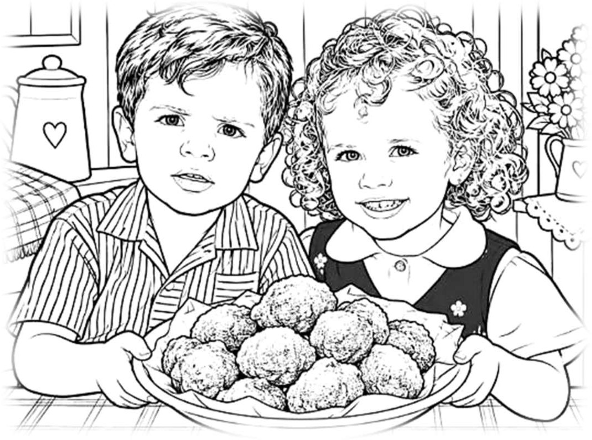

O Bolinho de Chuva da Vó Zelinda para a Neta Mariane
Crocante por fora, fofinho por dentro, com o aroma de açúcar e canela e aquele carinho que só uma avó sabe colocar nas coisas simples.
Há receitas que parecem ter nascido para acompanhar tardes de chuva. O bolinho de chuva é uma delas. Basta o óleo aquecendo no fogão, a massa sendo preparada e o açúcar misturado à canela para que a cozinha ganhe outro encanto. É um daqueles cheiros que ficam na memória muito depois que o último bolinho desaparece do prato.
Para Dona Zelinda, essa receita também guarda uma lembrança especial: a neta Mariane e seu irmão gêmeo, Carlos Eduardo.
Quando os dois estavam por perto, a cozinha ganhava a alegria própria das visitas queridas. Os bolinhos, fritos na hora e polvilhados cuidadosamente com açúcar e canela, chegavam à mesa ainda quentinhos, convidando todos a se aproximarem. E, como acontece nas melhores cozinhas de família, sempre havia espaço para mais um.
O bolinho de chuva tem essa qualidade rara: não precisa de ocasião especial, mesa posta para festa ou ingredientes sofisticados. Sua graça está justamente na simplicidade. É uma receita que transforma uma tarde comum em uma lembrança gostosa, dessas que os netos carregam consigo e, anos depois, recordam com um sorriso.
Talvez seja por isso que certas receitas de avó nunca desapareçam de verdade. Mesmo quando a infância fica para trás, o sabor permanece guardado em algum lugar da memória, junto com o cheiro da cozinha e a lembrança de quem preparava cada porção com cuidado.
O bolinho de chuva da Vó Zelinda é assim. Mais do que uma delícia açucarada, é um pedacinho da história entre avó e netos, preservado neste livro para que Mariane, Carlos Eduardo e as próximas gerações possam reencontrar, nessas páginas, um pouco da cozinha e do carinho que fazem parte de sua família.

Ingredientes
2 ovos
1 xícara de açúcar
1 xícara de leite
2 e 1/2 xícaras de farinha de trigo 1 colher (sopa) de fermento em pó Uma pitada de sal
Açúcar e canela em pó a gosto para polvilhar
Modo de preparo
A mistura do carinho
Em uma tigela funda, bata os ovos com o açúcar até obter uma mistura clara e homogênea. É o começo de uma receita simples, daquelas que perfumam a cozinha e anunciam que vem coisa boa por aí.
Os ingredientes secos e o leite
Acrescente o leite e, aos poucos, adicione a farinha de trigo, mexendo delicadamente para evitar a formação de grumos. A massa vai ganhando consistência, preparando-se para se transformar nos tradicionais bolinhos de chuva.
O ponto da massa
Adicione a pitada de sal e, por último, o fermento em pó. Misture suavemente até obter uma massa cremosa, consistente o suficiente para ser retirada com uma colher.
A fritura douradinha
Aqueça uma panela com óleo em fogo médio. Para que os bolinhos fiquem dourados por fora e cozidos por dentro, evite que o óleo fique quente demais. Com a ajuda de duas colheres, coloque pequenas porções da massa no óleo, com cuidado, e frite até dourarem por igual.
O toque final
Retire os bolinhos com uma escumadeira e coloque-os sobre papel absorvente para eliminar o excesso de óleo. Ainda quentinhos, passe-os na mistura de açúcar e canela.
Sirva na companhia de um café, de uma boa conversa e de quem se quer bem. Afinal, o bolinho de chuva da Vó Zelinda tem um destino especial: adoçar os momentos de Mariane, Carlos Eduardo e toda a família.